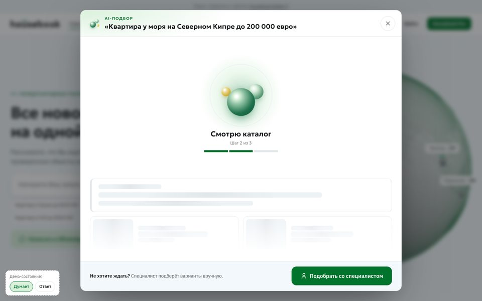
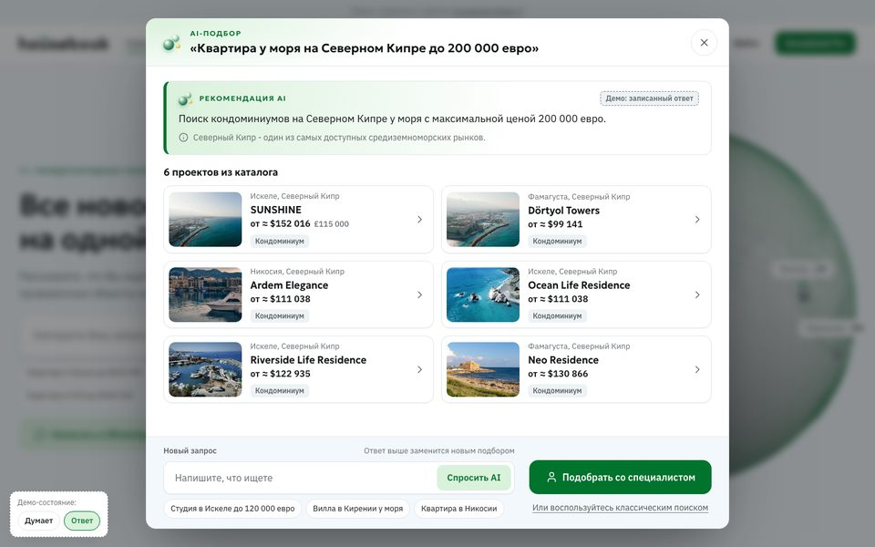
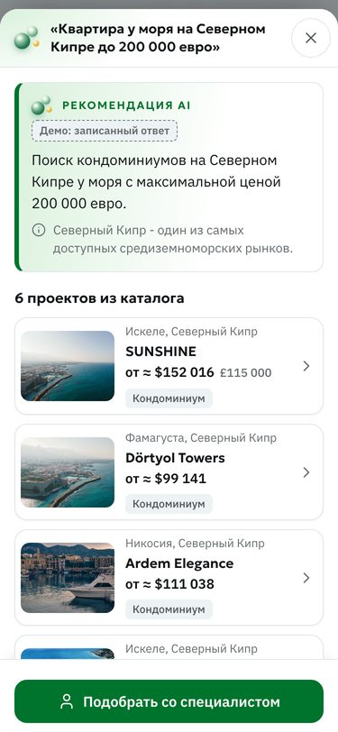
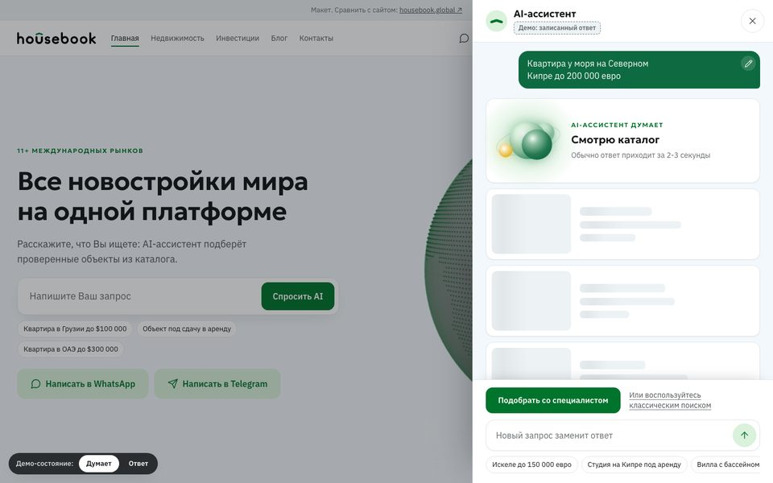
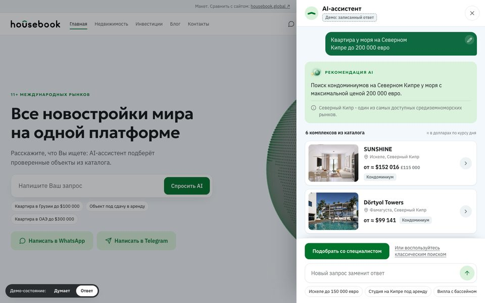
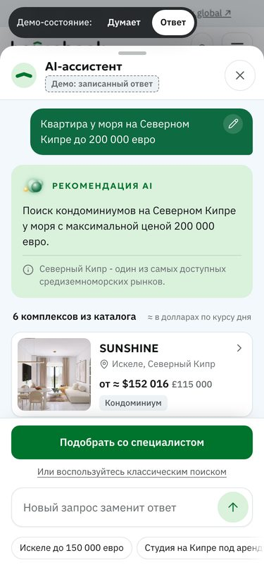
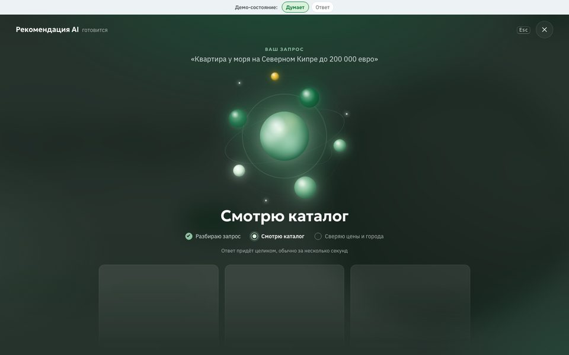
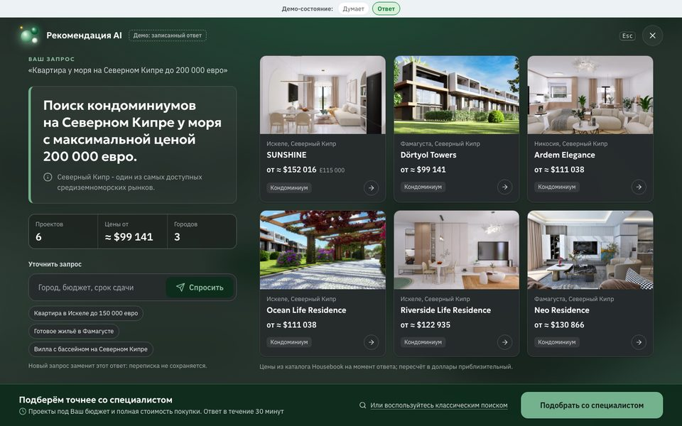
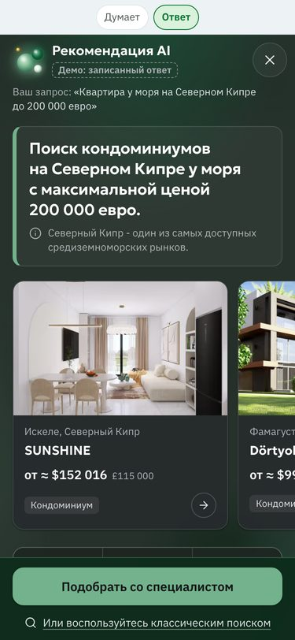

Housebook · концепты
Окно ответа AI‑подбора: три варианта
После нажатия «Спросить AI» ответ открывается окном поверх страницы. Пока AI думает, на экране «думающие сферы» и сменяющиеся подписи; затем рекомендация AI, шесть объектов из каталога и одна кнопка заявки «Подобрать со специалистом». Чипы под полем подставляют запрос в поле.
Во всех вариантах показан настоящий ответ боевого сайта на запрос «Квартира у моря на Северном Кипре до 200 000 евро», записанный 9 октября 2026 (пометка «Демо»). Переключатель «Думает / Ответ» в углу страницы показывает оба состояния. Окно закрывается крестиком или клавишей Esc.
1. Окно по центру
Модальное окно над затемнённой главной. Все шесть объектов на одном экране компьютера, сеткой в две колонки. Пока AI думает, внизу уже стоит кнопка заявки для тех, кто не хочет ждать. На телефоне окно занимает весь экран, кнопка заявки закреплена внизу.



2. Панель справа
Панель выезжает справа, главная остаётся видна слева. Подача как у ассистента: пузырь с запросом и карандашом для правки, затем ответ одним сообщением со списком объектов. На телефоне это нижняя шторка.



3. Полноэкранный фокус
Окно на весь экран на глубоком фирменном зелёном. Пока AI думает, по центру крупный рой сфер; в ответе крупная рекомендация, полоса с цифрами и шесть объектов с фото. На телефоне объекты идут горизонтальной лентой.



Думающие сферы: анимации ожидания
Девять анимаций из открытой библиотеки thinking-orbs (автор Jakub Antalik, лицензия MIT), перенесены без сборки и перекрашены в зелёную гамму Housebook с золотистым акцентом. Предложение для окна: «searching» (глобус с бегущим меридианом) крупно по центру, пока AI думает, и «breathing» (кольцо) маленькой в шапке окна.